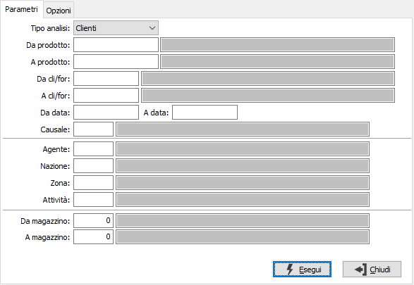
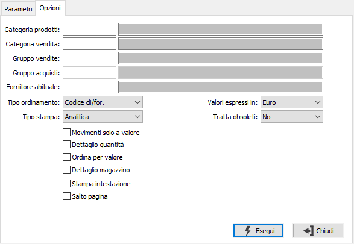

Analisi vendite/acquisti
Il programma produce prospetti di analisi del venduto o dell’acquistato relativi a uno o più parametri di selezione forniti dall’utente, consentendo l’output sia su carta che in formato Excel.

TIPO ANALISI: combo box per definire il tipo di anagrafica da selezionare. Valori ammessi: Clienti; Fornitori.
DA PRODOTTO: eventuale codice dell'articolo, presente in anagrafica Prodotti, da cui si desidera iniziare la selezione dei movimenti di magazzino. Confermando a vuoto, la selezione inizia con il primo prodotto valido. Sul campo è attiva la ricerca (F9) sull’anagrafica prodotti.
A PRODOTTO: eventuale codice dell'articolo, presente in anagrafica Prodotti, a cui si desidera terminare la selezione dei movimenti di magazzino. Confermando a vuoto, la selezione termina con l’ultimo valido. Sul campo è attiva la ricerca (F9) sull’anagrafica prodotti.
DA CLI/FOR: eventuale codice del cliente o fornitore, presente nella rispettiva anagrafica, da cui si desidera iniziare la selezione dei movimenti di magazzino. Confermando a vuoto, la selezione inizia con il primo valido. Sul campo è attiva la ricerca (F9) sull'anagrafica selezionata.
A CLI/FOR: eventuale codice del cliente o fornitore, presente nella rispettiva anagrafica, a cui si desidera concludere la selezione dei movimenti di magazzino. Confermando a vuoto, la selezione inizia con l’ultimo valido. Sul campo è attiva la ricerca (F9) sull'anagrafica selezionata.
DA DATA: eventuale data da cui deve iniziare l’analisi dei movimenti di magazzino per gli articoli precedentemente selezionati. Confermando a vuoto, l’analisi inizia con il primo movimento valido.
A DATA: eventuale data con cui si desidera terminare l’analisi dei movimenti di magazzino per gli articoli precedentemente selezionati. Confermando a vuoto, l’analisi si conclude con l'ultimo movimento valido.
CAUSALE: eventuale codice della causale di magazzino, a cui si desidera limitare l’analisi dei movimenti di magazzino. Sul campo è attiva la ricerca (F9) sulla tabella stessa.
AGENTE: eventuale codice dell’agente, presente in anagrafica dei clienti o fornitori selezionati, a cui si desidera limitare l’analisi dei movimenti di magazzino. Sul campo è attiva la ricerca (F9) sull’anagrafica agenti.
NAZIONE: eventuale codice della nazione, presente in anagrafica dei clienti o fornitori selezionati, a cui si desidera limitare l’analisi dei movimenti di magazzino. Sul campo è attiva la ricerca (F9) F9 sulla Tabella nazioni.
ZONA: eventuale codice della zona, presente in anagrafica dei clienti o fornitori selezionati, a cui si desidera limitare l’analisi dei movimenti di magazzino. Sul campo è attiva la ricerca (F9) sulla Tabella zone.
ATTIVITÀ: eventuale codice della attività, presente in anagrafica dei clienti o fornitori selezionati, a cui si desidera limitare l’analisi dei movimenti di magazzino. Sul campo è attiva la ricerca (F9) F9 sulla Tabella attività.
DA MAGAZZINO: eventuale codice del magazzino da cui si vuole iniziare la selezione di analisi. Confermando a vuoto, l’analisi inizia dal primo magazzino valido. Sul campo è attiva la ricerca (F9) F9 sulla tabella Magazzini.
A MAGAZZINO: eventuale codice del magazzino con cui si vuole concludere la selezione di analisi. Confermando a vuoto, l’analisi termina con l’ultimo magazzino valido. Sul campo è attiva la ricerca (F9) sulla tabella Magazzini.
La seconda pagina contiene ulteriori opzioni di selezione

CATEGORIA PRODOTTI: eventuale codice della categoria merceologica presente in anagrafica Prodotti, a cui si desidera limitare la selezione di analisi. Sul campo è attiva la ricerca (F9) sulla tabella Categorie merceologiche.
CATEGORIA VENDITA: eventuale codice della categoria di vendita presente in anagrafica Prodotti, a cui si desidera limitare la selezione di analisi. Sul campo è attiva la ricerca (F9) sulla tabella Categorie di vendita.
GRUPPO VENDITE: eventuale codice della gruppo vendite presente in anagrafica Prodotti, a cui si desidera limitare la selezione di analisi. Sul campo è attiva la ricerca (F9) sulla tabella Gruppi vendita.
GRUPPO ACQUISTI: eventuale codice della gruppo acquisti presente in anagrafica Prodotti, a cui si desidera limitare la selezione di analisi. Sul campo è attiva la ricerca (F9) sulla tabella Gruppi acquisti.
FORNITORE ABITUALE: eventuale codice del fornitore abituale dei prodotti con cui si desidera effettuare la selezione dei prodotti. Sul campo è attiva la ricerca (F9) sull’anagrafica fornitori.
ORDINAMENTO PER: combo box per definire i criteri di ordinamento. Valori ammessi: Codice cli/for; Ragione sociale; Codice prodotto; Descrizione prodotto.
VALORI ESPRESSI IN: definisce la moneta di conto in cui verranno stampati i controvalori.
TRATTA OBSOLETI: definisce come se includere nell'analisi anche gli articoli obsoleti: Si, No, Solo obsoleti.
MOVIMENTO SOLO A VALORE: indica se considerare i movimenti solo a valore (casella con segno di spunta).
DETTAGLIO QUANTITÀ: indica se stampare il dettaglio delle quantità o solo i totali (casella con segno di spunta).
STAMPA SINTETICA: definisce se effettuare la stampa del report in formato sintetico (casella con segno di spunta).
ORDINA PER VALORE: indica se ordinare la stampa in base al valore, casella con segno di spunta.
DETTAGLIO MAGAZZINO: check box per definire i criteri di visualizzazione in caso di presenza in più magazzini dello stesso prodotto. Valori ammessi: vuoto = visualizza il totale dei magazzini; spunta = visualizza analiticamente i singoli magazzini.
STAMPA INTESTAZIONE: indica se stampare una pagina con i criteri di selezione della stampa, l’operatore che l’ ha eseguita, la data e l’ora (casella con segno di spunta).
SALTO PAGINA: definisce se effettuare il salto pagina al termine di ogni gruppo di stampa relativo all'ordinamento selezionato (casella con segno di spunta).